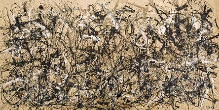
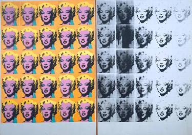

Les Demoiselles d’Avignon
Proto-Cubism / ModernismParisOil painting
One of the major fractures in Western painting.
More ↗c. 1907 → 1970
A field of restless experiments in which form breaks open and the terms of art are renegotiated


Guide timeline
Move across the whole guide in sequence: see the dates, where you are now, and the next chapter coming up.
Overview
Modernism is not one look. It is a sustained argument about what form can do once resemblance is no longer the only measure of success: fracture, reduction, collage, symbol, concept, and gesture all enter the room.
Works
One of the major fractures in Western painting.
More ↗
A clear statement that painting need not depict objects at all.
More ↗
Art history turns from craft alone to ideas and selection.
More ↗
Identity, pain, duality, and self-presentation move to the center.
More ↗
Gesture itself becomes the event.
More ↗
Next